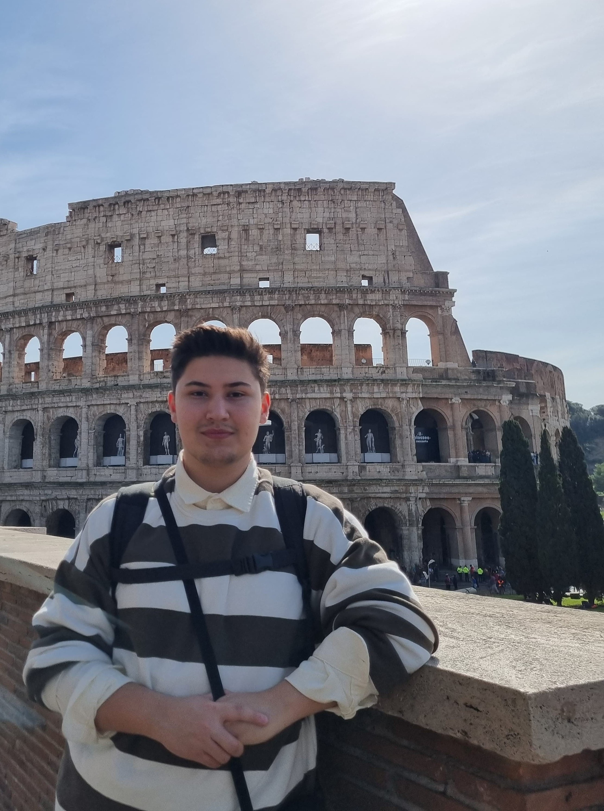
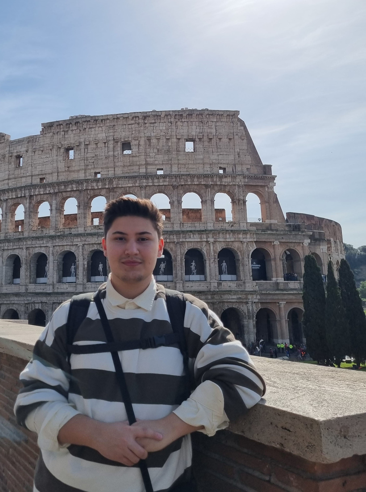

Bit About Me
I have a high level of knowledge of Python and C languages. I am advanced in data structures in C language.
I am preparing documents for data structures and will give lectures on YouTube. I have developed multiple websites
using html css and javascript. I teach database management systems to university students part-time on behalf of Ankara University.
Last year, I worked part-time on WordPress at the Information Technology Department of Ankara University.
I also have game development experience with Unity and C#. I am talented in cartoon drawing and fantasy character drawings.
I have many projects about drawing and graphic design. I designed costumes for the characters in Alive in Shelter,
which was nominated for the Indie Game of the Year Award on Google Play Store.
As the AGSTech team, we came first in Turkey
with our DigiCampus project in the international hackathon competition called DigiEduHack, which is held worldwide with the
support of the European Union. We are waiting for February to present our project to the European Union Commission in Estonia.
In addition, I work in the computer team of the team called TeoTech,
which will compete in the electric vehicle category at Teknofest.
I took on the task of designing the vehicle interior interface in the team and I am interested in UI/UX design.
I developed the website for the team.